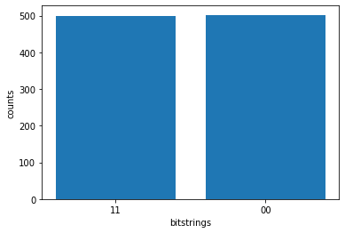

Getting started with Amazon Braket#
In this hello-world tutorial we prepare a maximally entangled Bell state between two qubits. We then run our circuit on a local simulator and obtain the results.
# general imports
import matplotlib.pyplot as plt
%matplotlib inline
# AWS imports: Import Braket SDK modules
from braket.circuits import Circuit
from braket.devices import LocalSimulator
Build a circuit#
Let’s build a Bell state with two qubits. By calling Circuit() we create an empty circuit, and we can just add gates to the circuit.
# build a Bell state with two qubits. Here 'cnot(control=0, target=1)' can be simplified as 'cnot(0,1)'
bell = Circuit().h(0).cnot(control=0, target=1)
Submit the circuit to the local simulator and obtain the results#
Here we submit our circuit to the local simulator and obtain the results.
# set up device
device = LocalSimulator()
# run circuit
result = device.run(bell, shots=1000).result()
# get measurement shots
counts = result.measurement_counts
# print counts
print(counts)
Counter({'00': 502, '11': 498})
# plot using Counter
plt.bar(counts.keys(), counts.values());
plt.xlabel('bitstrings');
plt.ylabel('counts');
